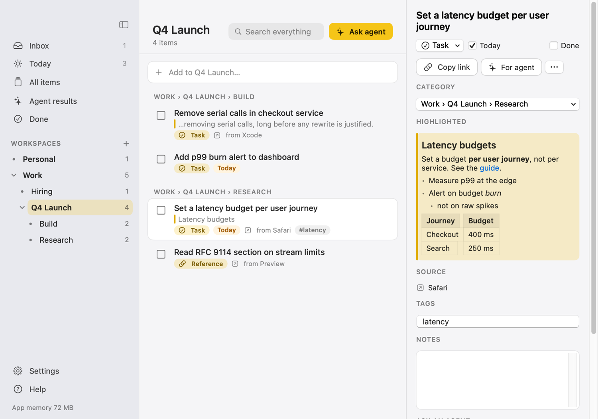
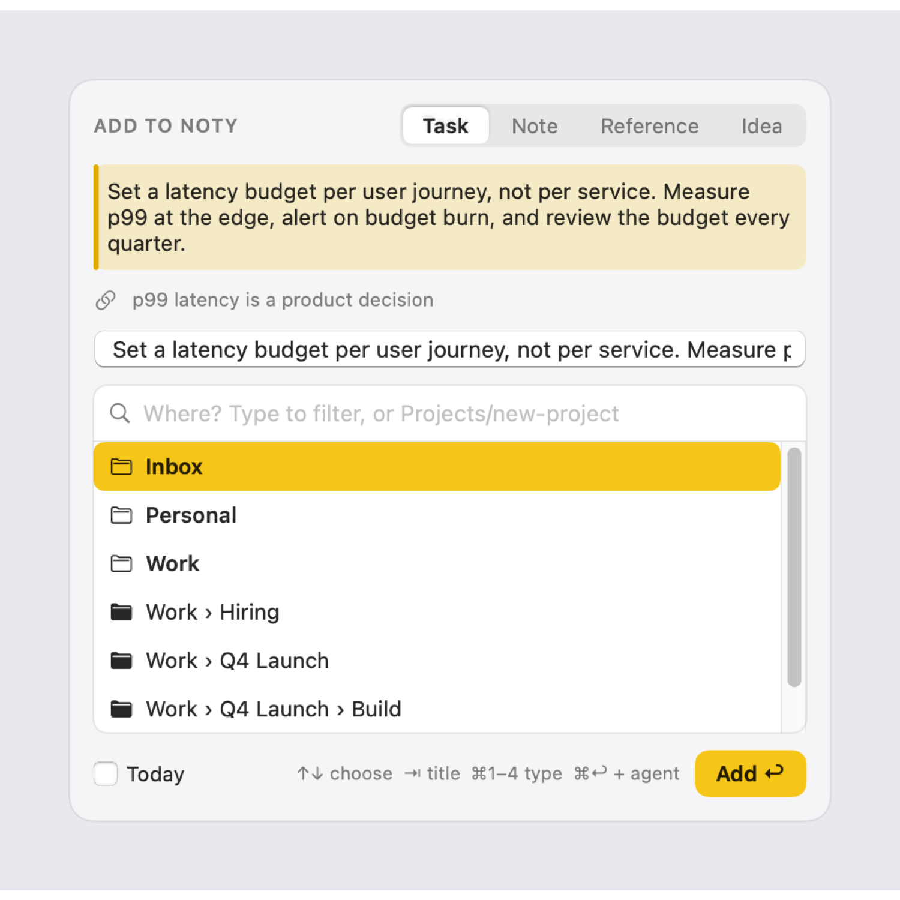
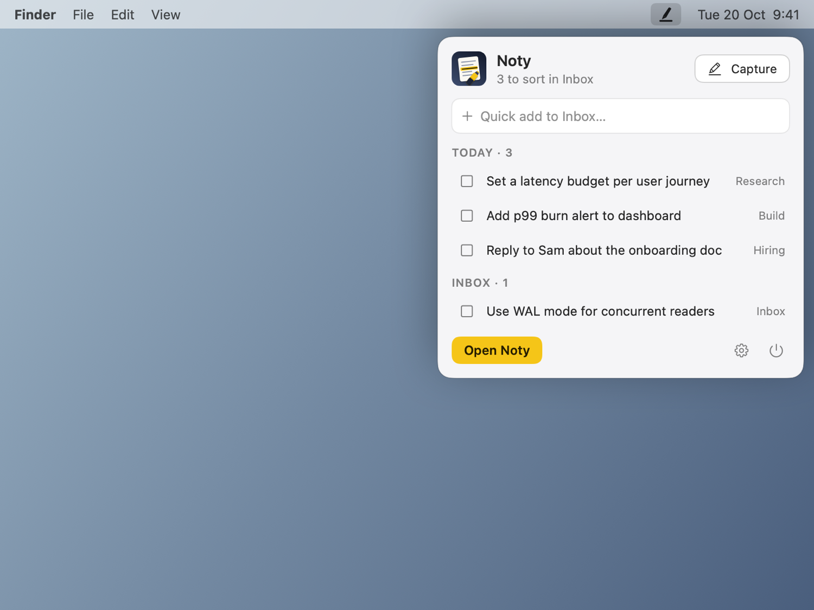
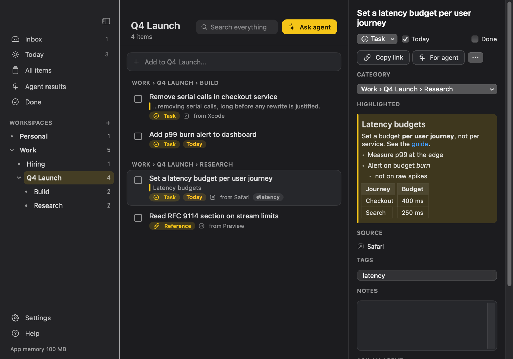
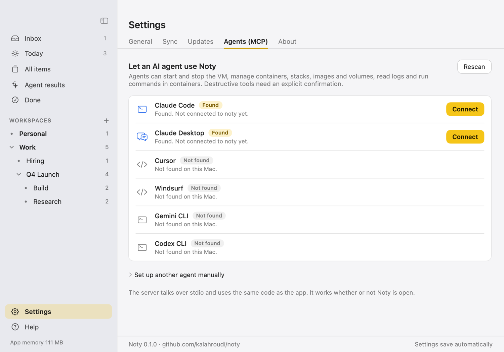

Highlight text anywhere on your Mac. Press a shortcut. It lands in a categorised to-do tree your AI agents can work on.

Select text (or a picture, a PDF, a Word paragraph), press ⌥⌘N, pick a category with the arrow keys, press Return. Headings, lists, links and tables keep their structure.
Nest categories as deep as you like, for example Projects › mlxplayer › Bugs. They are real folders; every item is a Markdown file.
Connect Claude Code, Claude Desktop or Cursor in one click. Ask an agent to review, split into subtasks, turn items into skills, write Markdown, or fix what they describe.
Agents propose files; nothing is written until you approve it. Deleting needs an explicit confirmation.
Keep the library in iCloud Drive or any folder (Dropbox, Syncthing, git). No account, no cloud service to trust.
A native Swift menu bar app with no dependencies. About 40 MB, and nothing runs while its windows are closed.




Paste this into Claude Code or another agent. Noty needs nothing installed first.
Install Noty on this Mac. 1. Run: curl -fsSL https://raw.githubusercontent.com/kalahroudi/noty/main/scripts/install.sh | bash 2. Noty opens in the menu bar. Tell me to press ⌥⌘N once and allow Accessibility when macOS asks. 3. Register its MCP server: claude mcp add noty --scope user -- /Applications/Noty.app/Contents/MacOS/noty-mcp 4. Call get_status and tell me what it reports. Never delete my items without asking me first.
Download the DMG from the latest release, drag Noty to Applications, and open it. The app is not notarized yet, so the first time use right-click → Open.